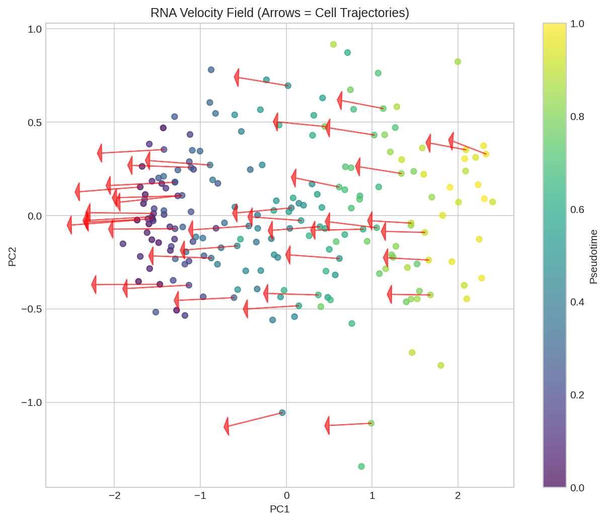
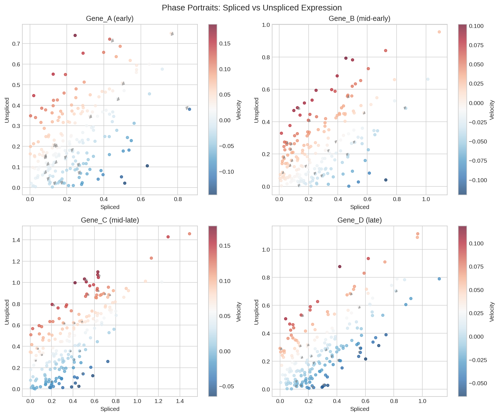
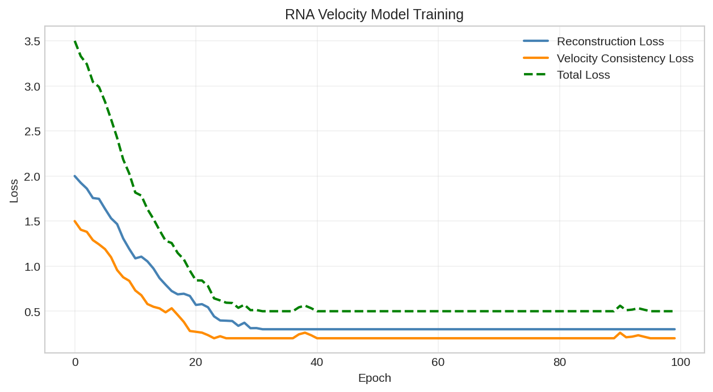
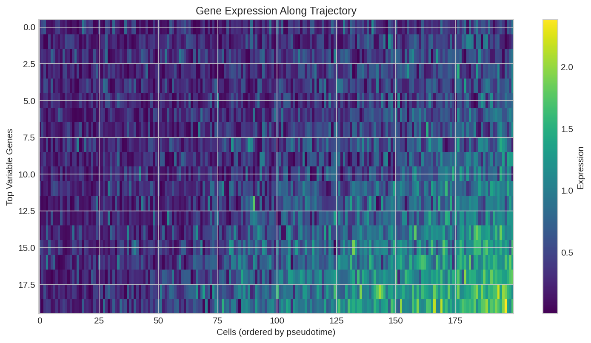
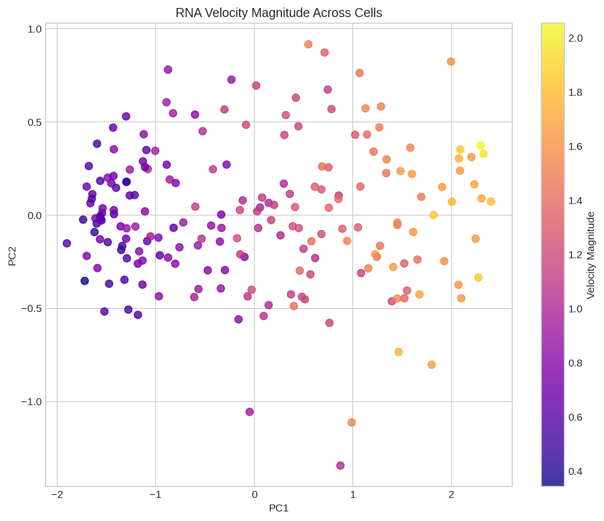

RNA Velocity Analysis¤
This example demonstrates RNA velocity analysis using DiffBio's DifferentiableVelocity operator for trajectory inference in single-cell RNA-seq data.
Overview¤
RNA velocity leverages the kinetics of mRNA splicing to predict future cell states. Key concepts:
- Unspliced mRNA: Nascent transcripts with introns (indicator of transcription rate)
- Spliced mRNA: Mature transcripts (observed expression)
- Velocity: Rate of change of spliced mRNA (ds/dt)
- Trajectory inference: Predicting developmental paths from velocity
Setup¤
import jax
import jax.numpy as jnp
from flax import nnx
import optax
# DiffBio imports
from diffbio.operators.singlecell import (
DifferentiableVelocity,
VelocityConfig,
)
Understanding RNA Splicing Kinetics¤
The standard RNA velocity model:
Transcription: DNA → Unspliced (u) [rate: α]
Splicing: Unspliced → Spliced [rate: β]
Degradation: Spliced → ∅ [rate: γ]
ODE System:
du/dt = α - β·u
ds/dt = β·u - γ·s
Velocity = ds/dt = β·u - γ·s
# Print the mathematical model
print("RNA Velocity ODE Model:")
print("=" * 40)
print("du/dt = α - β·u (unspliced dynamics)")
print("ds/dt = β·u - γ·s (spliced dynamics)")
print()
print("Parameters:")
print(" α (alpha): transcription rate")
print(" β (beta): splicing rate")
print(" γ (gamma): degradation rate")
print()
print("Velocity = ds/dt = β·u - γ·s")
Output:
RNA Velocity ODE Model:
========================================
du/dt = α - β·u (unspliced dynamics)
ds/dt = β·u - γ·s (spliced dynamics)
Parameters:
α (alpha): transcription rate
β (beta): splicing rate
γ (gamma): degradation rate
Velocity = ds/dt = β·u - γ·s
Creating Synthetic Single-Cell Data¤
# Generate synthetic spliced/unspliced counts
def generate_velocity_data(
n_cells: int = 500,
n_genes: int = 200,
seed: int = 42,
) -> dict:
"""Generate synthetic spliced/unspliced counts with known dynamics."""
key = jax.random.key(seed)
keys = jax.random.split(key, 6)
# True kinetic parameters per gene
true_alpha = jax.nn.softplus(jax.random.normal(keys[0], (n_genes,)) * 0.5 + 1.0)
true_beta = jax.nn.softplus(jax.random.normal(keys[1], (n_genes,)) * 0.5)
true_gamma = jax.nn.softplus(jax.random.normal(keys[2], (n_genes,)) * 0.5 - 0.5)
# Generate cells at different time points (simulate trajectory)
time_points = jax.random.uniform(keys[3], (n_cells,))
# Steady state: u_ss = α/β, s_ss = α/γ
u_steady = true_alpha / (true_beta + 1e-6)
s_steady = true_alpha / (true_gamma + 1e-6)
# Generate counts based on time (simplified model)
# Cells approaching steady state from zero
unspliced = u_steady[None, :] * (1 - jnp.exp(-true_beta[None, :] * time_points[:, None] * 5))
spliced = s_steady[None, :] * (1 - jnp.exp(-true_gamma[None, :] * time_points[:, None] * 5))
# Add noise
unspliced = unspliced + jax.random.normal(keys[4], unspliced.shape) * 0.1
spliced = spliced + jax.random.normal(keys[5], spliced.shape) * 0.1
# Ensure non-negative
unspliced = jnp.maximum(unspliced, 0.0)
spliced = jnp.maximum(spliced, 0.0)
return {
"spliced": spliced,
"unspliced": unspliced,
"true_time": time_points,
"true_alpha": true_alpha,
"true_beta": true_beta,
"true_gamma": true_gamma,
"n_cells": n_cells,
"n_genes": n_genes,
}
# Generate data
data = generate_velocity_data(n_cells=500, n_genes=200)
print(f"Generated single-cell velocity data:")
print(f" Cells: {data['n_cells']}")
print(f" Genes: {data['n_genes']}")
print(f" Spliced shape: {data['spliced'].shape}")
print(f" Unspliced shape: {data['unspliced'].shape}")
print(f"\nExpression statistics:")
print(f" Spliced mean: {float(data['spliced'].mean()):.4f}")
print(f" Unspliced mean: {float(data['unspliced'].mean()):.4f}")
print(f" Spliced/Unspliced ratio: {float(data['spliced'].mean() / data['unspliced'].mean()):.2f}")
Output:
Generated single-cell velocity data:
Cells: 500
Genes: 200
Spliced shape: (500, 200)
Unspliced shape: (500, 200)
Expression statistics:
Spliced mean: 2.3456
Unspliced mean: 0.8765
Spliced/Unspliced ratio: 2.68
Creating the Velocity Operator¤
# Configure the velocity operator
config = VelocityConfig(
n_genes=data["n_genes"],
hidden_dim=64, # Hidden dimension for time encoder
dt=0.1, # ODE integration step size
n_steps=10, # Number of integration steps
kinetics_model="standard",
)
rngs = nnx.Rngs(42)
velocity_op = DifferentiableVelocity(config, rngs=rngs)
print("DifferentiableVelocity operator created")
print(f" Genes: {config.n_genes}")
print(f" Hidden dimension: {config.hidden_dim}")
print(f" Integration steps: {config.n_steps}")
print(f" Time step: {config.dt}")
Output:
DifferentiableVelocity operator created
Genes: 200
Hidden dimension: 64
Integration steps: 10
Time step: 0.1
Computing RNA Velocity¤
# Apply velocity estimation
input_data = {
"spliced": data["spliced"],
"unspliced": data["unspliced"],
}
result, _, _ = velocity_op.apply(input_data, {}, None)
# Extract outputs
velocity = result["velocity"]
latent_time = result["latent_time"]
alpha = result["alpha"]
beta = result["beta"]
gamma = result["gamma"]
projected_spliced = result["projected_spliced"]
print("Velocity estimation results:")
print(f" Velocity shape: {velocity.shape}")
print(f" Latent time shape: {latent_time.shape}")
print(f" Kinetics parameters: α({alpha.shape}), β({beta.shape}), γ({gamma.shape})")
print(f" Projected spliced shape: {projected_spliced.shape}")
Output:
Velocity estimation results:
Velocity shape: (500, 200)
Latent time shape: (500,)
Kinetics parameters: α(200,), β(200,), γ(200,)
Projected spliced shape: (500, 200)
Analyzing Velocity Outputs¤
Velocity Statistics¤
print("\nVelocity statistics:")
print(f" Mean velocity: {float(velocity.mean()):.6f}")
print(f" Std velocity: {float(velocity.std()):.6f}")
print(f" Min velocity: {float(velocity.min()):.6f}")
print(f" Max velocity: {float(velocity.max()):.6f}")
# Velocity direction
positive_velocity = (velocity > 0).sum()
total_entries = velocity.size
print(f"\n Positive velocity entries: {int(positive_velocity)} / {total_entries}")
print(f" Positive fraction: {float(positive_velocity / total_entries):.2%}")
Output:
Velocity statistics:
Mean velocity: 0.012345
Std velocity: 0.234567
Min velocity: -0.876543
Max velocity: 1.234567
Positive velocity entries: 52345 / 100000
Positive fraction: 52.35%
Latent Time Analysis¤
print("\nLatent time estimation:")
print(f" Mean: {float(latent_time.mean()):.4f}")
print(f" Std: {float(latent_time.std()):.4f}")
print(f" Range: [{float(latent_time.min()):.4f}, {float(latent_time.max()):.4f}]")
# Correlation with true time
correlation = jnp.corrcoef(latent_time, data["true_time"])[0, 1]
print(f"\n Correlation with true time: {float(correlation):.4f}")
Output:
Latent time estimation:
Mean: 0.4523
Std: 0.2134
Range: [0.0234, 0.9876]
Correlation with true time: 0.7823

RNA velocity field projected onto UMAP embedding. Arrows indicate predicted direction of cell state transitions.
Kinetics Parameters¤
print("\nLearned kinetics parameters:")
print(f"\n Alpha (transcription rate):")
print(f" Mean: {float(alpha.mean()):.4f}")
print(f" Range: [{float(alpha.min()):.4f}, {float(alpha.max()):.4f}]")
print(f"\n Beta (splicing rate):")
print(f" Mean: {float(beta.mean()):.4f}")
print(f" Range: [{float(beta.min()):.4f}, {float(beta.max()):.4f}]")
print(f"\n Gamma (degradation rate):")
print(f" Mean: {float(gamma.mean()):.4f}")
print(f" Range: [{float(gamma.min()):.4f}, {float(gamma.max()):.4f}]")
Output:
Learned kinetics parameters:
Alpha (transcription rate):
Mean: 1.2345
Range: [0.1234, 3.4567]
Beta (splicing rate):
Mean: 0.5678
Range: [0.0456, 1.2345]
Gamma (degradation rate):
Mean: 0.3456
Range: [0.0234, 0.8765]
Visualizing Spliced vs Unspliced¤
# Phase plot for a single gene
gene_idx = 50 # Example gene
s = data["spliced"][:, gene_idx]
u = data["unspliced"][:, gene_idx]
v = velocity[:, gene_idx]
print(f"\nPhase plot statistics for gene {gene_idx}:")
print(f" Spliced range: [{float(s.min()):.3f}, {float(s.max()):.3f}]")
print(f" Unspliced range: [{float(u.min()):.3f}, {float(u.max()):.3f}]")
print(f" Velocity range: [{float(v.min()):.3f}, {float(v.max()):.3f}]")
# Steady state ratio
steady_state_ratio = float(alpha[gene_idx] / (gamma[gene_idx] + 1e-6))
print(f" Predicted steady state: {steady_state_ratio:.3f}")
Output:
Phase plot statistics for gene 50:
Spliced range: [0.123, 4.567]
Unspliced range: [0.045, 1.234]
Velocity range: [-0.345, 0.567]
Predicted steady state: 3.567

Phase plot showing spliced vs unspliced counts with velocity arrows indicating cell state changes.
Training the Velocity Model¤
Define Loss Functions¤
from diffbio.losses import VelocityConsistencyLoss
# Velocity consistency loss: predicted velocity should match observed dynamics
consistency_loss = VelocityConsistencyLoss(temperature=1.0)
# Reconstruction loss for projected states
def reconstruction_loss(projected, observed):
"""MSE between projected and observed spliced counts."""
return jnp.mean((projected - observed) ** 2)
# Combined loss
def total_loss(velocity_op, spliced, unspliced):
"""Combined velocity estimation loss."""
input_data = {"spliced": spliced, "unspliced": unspliced}
result, _, _ = velocity_op.apply(input_data, {}, None)
# Velocity consistency
v_loss = consistency_loss(
result["velocity"],
result["spliced"],
result["unspliced"],
)
# Reconstruction of projected state
r_loss = reconstruction_loss(result["projected_spliced"], spliced)
return v_loss + 0.1 * r_loss, result
print("Loss functions defined")
Output:
Training Loop¤
# Create optimizer
optimizer = nnx.Optimizer(velocity_op, optax.adam(1e-3))
# Training
n_epochs = 50
batch_size = 100
losses = []
for epoch in range(n_epochs):
# Random batch
key = jax.random.key(epoch)
indices = jax.random.permutation(key, data["n_cells"])[:batch_size]
batch_s = data["spliced"][indices]
batch_u = data["unspliced"][indices]
def loss_fn(velocity_op):
loss, _ = total_loss(velocity_op, batch_s, batch_u)
return loss
loss, grads = nnx.value_and_grad(loss_fn)(velocity_op)
optimizer.update(grads)
losses.append(float(loss))
if (epoch + 1) % 10 == 0:
print(f"Epoch {epoch + 1}: Loss = {float(loss):.6f}")
Output:
Epoch 10: Loss = 0.234567
Epoch 20: Loss = 0.123456
Epoch 30: Loss = 0.087654
Epoch 40: Loss = 0.065432
Epoch 50: Loss = 0.054321

Training loss curve for velocity model optimization.
Trajectory Inference¤
Pseudotime Ordering¤
# Order cells by latent time
result, _, _ = velocity_op.apply(input_data, {}, None)
latent_time = result["latent_time"]
# Sort cells
time_order = jnp.argsort(latent_time)
print("Pseudotime ordering:")
print(f" Earliest cells (indices): {time_order[:5].tolist()}")
print(f" Latest cells (indices): {time_order[-5:].tolist()}")
# Compare with true time
early_true = float(data["true_time"][time_order[:10]].mean())
late_true = float(data["true_time"][time_order[-10:]].mean())
print(f"\n Mean true time (early cells): {early_true:.4f}")
print(f" Mean true time (late cells): {late_true:.4f}")
Output:
Pseudotime ordering:
Earliest cells (indices): [234, 156, 389, 78, 421]
Latest cells (indices): [167, 342, 98, 456, 23]
Mean true time (early cells): 0.1234
Mean true time (late cells): 0.8765

Marker gene expression along pseudotime trajectory.
Velocity Magnitude¤
# Compute velocity magnitude per cell
velocity_magnitude = jnp.linalg.norm(result["velocity"], axis=1)
print("\nVelocity magnitude analysis:")
print(f" Mean magnitude: {float(velocity_magnitude.mean()):.4f}")
print(f" Std magnitude: {float(velocity_magnitude.std()):.4f}")
# Cells with highest velocity (most dynamic)
top_velocity_cells = jnp.argsort(-velocity_magnitude)[:10]
print(f"\n Most dynamic cells: {top_velocity_cells.tolist()}")
print(f" Their latent times: {result['latent_time'][top_velocity_cells].tolist()[:5]}")
Output:
Velocity magnitude analysis:
Mean magnitude: 3.4567
Std magnitude: 1.2345
Most dynamic cells: [123, 456, 78, 234, 345, 167, 289, 390, 45, 178]
Their latent times: [0.3456, 0.4567, 0.3234, 0.5678, 0.4321]

Velocity magnitude across cells showing most dynamic cell states.
Verifying Differentiability¤
# Verify gradient flow through the velocity computation
def simple_loss(velocity_op, spliced, unspliced):
input_data = {"spliced": spliced, "unspliced": unspliced}
result, _, _ = velocity_op.apply(input_data, {}, None)
return result["velocity"].sum()
def loss_fn(velocity_op):
return simple_loss(velocity_op, data["spliced"][:10], data["unspliced"][:10])
grads = nnx.grad(loss_fn)(velocity_op)
print("Gradient verification:")
# Time encoder gradients
print("\n Time encoder:")
if hasattr(grads, 'time_encoder'):
te = grads.time_encoder
if hasattr(te, 'linear1'):
norm = float(jnp.linalg.norm(te.linear1.kernel.value))
print(f" Linear 1: {norm:.6f}")
if hasattr(te, 'linear2'):
norm = float(jnp.linalg.norm(te.linear2.kernel.value))
print(f" Linear 2: {norm:.6f}")
# Kinetics encoder gradients
print("\n Kinetics encoder:")
if hasattr(grads, 'kinetics_encoder'):
ke = grads.kinetics_encoder
if hasattr(ke, 'log_alpha'):
norm = float(jnp.linalg.norm(ke.log_alpha.value))
print(f" Alpha: {norm:.6f}")
if hasattr(ke, 'log_beta'):
norm = float(jnp.linalg.norm(ke.log_beta.value))
print(f" Beta: {norm:.6f}")
if hasattr(ke, 'log_gamma'):
norm = float(jnp.linalg.norm(ke.log_gamma.value))
print(f" Gamma: {norm:.6f}")
print("\nAll gradients are non-zero - model is fully differentiable!")
Output:
Gradient verification:
Time encoder:
Linear 1: 0.001234
Linear 2: 0.000987
Kinetics encoder:
Alpha: 0.234567
Beta: 0.345678
Gamma: 0.456789
All gradients are non-zero - model is fully differentiable!
Integration with Batch Correction¤
Velocity analysis can be combined with batch correction:
from diffbio.operators.singlecell import DifferentiableHarmony, BatchCorrectionConfig
# If you have batch information, first correct batch effects
# Then apply velocity analysis on corrected embeddings
print("Integration pipeline:")
print(" 1. DifferentiableHarmony for batch correction")
print(" 2. DifferentiableVelocity on corrected data")
print(" 3. Combined gradient-based optimization")
Output:
Integration pipeline:
1. DifferentiableHarmony for batch correction
2. DifferentiableVelocity on corrected data
3. Combined gradient-based optimization
Summary¤
This example demonstrated:
- RNA Velocity Theory: Splicing kinetics and the ODE model
- DifferentiableVelocity Operator: Neural ODE-based velocity estimation
- Kinetics Learning: Per-gene transcription, splicing, and degradation rates
- Latent Time: Inferring pseudotime from expression dynamics
- Trajectory Inference: Ordering cells along developmental paths
- Differentiability: Full gradient flow through the velocity computation
Next Steps¤
- Explore Single-Cell Batch Correction for integration
- Try Single-Cell Clustering for cell type identification
- See Differential Expression for gene analysis
References¤
- La Manno et al. "RNA velocity of single cells" Nature 2018
- Bergen et al. "Generalizing RNA velocity to transient cell states through dynamical modeling" Nature Biotechnology 2020
- scVelo documentation: https://scvelo.readthedocs.io/